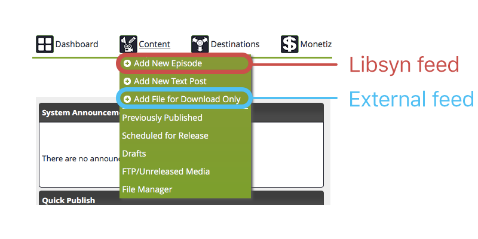

There are two ways of uploading your podcast episodes to Libsyn: using a Libsyn feed or using an External feed. The option you choose for Transducer needs to match the way you publish your podcast so that your podcast’s audio files end up in the right place.
Most people use a Libsyn feed unless they (or their website creator) has specifically set up their podcast feed so that the RSS feed is hosted somewhere other than Libsyn.
If you have any questions, feel free to email me and I will help you out.
You should choose Libsyn feed if any of these are what you do:
You should choose External feed if any of these are what you do: